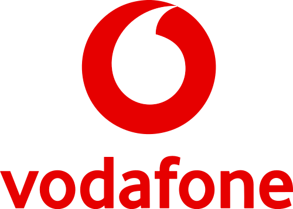

BTP Full-Stack Development
Moderne UI5/Fiori-Apps mit ABAP RAP oder CAP Backend. E2E-Entwicklung von der technischen Konzeption über Backend und Schnittstellen bis zum Frontend.
SAP Full-Stack Architect
Von der Zielarchitektur über Backend und Schnittstellen bis zum Frontend – mit CAP, RAP, ABAP, UI5 und CPI. Zertifiziert in SAP Integration, S/4HANA Development & AI.
Verfügbar ab Q1/2026 | Remote & DACH
Vertrauen von führenden Unternehmen



Ich entwerfe und entwickle durchgängige, skalierbare Lösungsarchitekturen auf der SAP BTP – von der Zielarchitektur über Backend-Logik und Schnittstellen bis hin zum Frontend.
Mein Schwerpunkt liegt auf Full-Stack-Entwicklung mit CAP, RAP, ABAP und UI5 sowie auf der Konzeption von BTP-Zielarchitekturen, die Systeme sauber strukturieren und nachhaltig erweiterbar machen. Integration ist dabei ein selbstverständlicher Bestandteil meiner Architekturarbeit – nicht mein alleiniger Fokus.
Konsequent nach dem Clean-Core-Prinzip: Side-by-Side-Entwicklung, wartbare Lösungen und nachhaltige Architekturen. Ich arbeite sowohl auf Architektur- als auch auf Implementierungsebene.
Moderne UI5/Fiori-Apps mit ABAP RAP oder CAP Backend. E2E-Entwicklung von der technischen Konzeption über Backend und Schnittstellen bis zum Frontend.
Gesamtverantwortung für BTP-Zielarchitekturen. Setup von Subaccounts, Security, Cloud Connector und Build-Services nach dem Clean-Core-Prinzip.
CPI iFlows, API Management und Event Mesh. Cloud-native Integrationsarchitekturen als Bestandteil durchgängiger Lösungslandschaften.
Alle Details zu meinem Werdegang, Projekten und Verfügbarkeit finden Sie auf Freelancermap.
Gesamtverantwortung für BTP-Zielarchitektur in komplexem Intralogistik-Umfeld. Multikomponenten-Architekturen mit CAP, RAP, Event Mesh und Build Process Automation nach dem Clean-Core-Ansatz.
Architekturverantwortung und technische Leitung der Full-Stack-Entwicklung im Rahmen einer hochautomatisierten SAP EWM-Einführung. OData-Schnittstellenlandschaft und moderne UI5-Apps (TypeScript).
Cloud-native Integrationslandschaft für Echtzeit-Materialstammdaten. E2E-Verantwortung von der Zielarchitektur über CPI iFlows bis zum S/4-Backend (ABAP Proxy, OData).
Haben Sie ein Projekt im Kopf? Ich freue mich auf Ihre Nachricht.